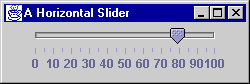
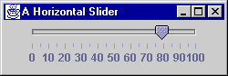
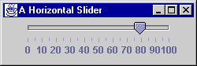

QUESTION 3:
 

Fill in the blanks to construct the slider at right:
slide = new JSlider( ______.______, ______, ______, ______ );
A ChangeListener
There are several constructors. Here is the one that is most useful:
JSlider( int orientation, int min, int max, int init)
SwingConstants.HORIZONTAL or
SwingConstants.VERTICALThe characteristics of the tick marks and labels are set using method calls.

Fill in the blanks to construct the slider at right:
slide = new JSlider( ______.______, ______, ______, ______ );